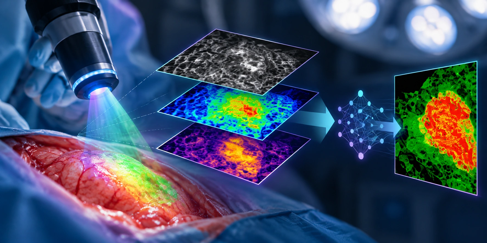

What Is Fluorescence Lifetime Imaging (FLIM)?
Fluorescence imaging is widely used in biological and biomedical research to visualise molecules, cells and tissues. While conventional fluorescence imaging often focuses on how bright a fluorescent signal is, another property of fluorescence can provide additional information: fluorescence lifetime.
Fluorescence lifetime imaging microscopy (FLIM) measures how long a fluorescent molecule remains in an excited state before returning to its ground state and emitting a photon. Rather than simply measuring fluorescence intensity, FLIM maps these fluorescence lifetimes across an image.
This provides a different way of examining biological tissue and can reveal information about the molecular environment that may not be apparent from fluorescence intensity alone.

How does fluorescence lifetime work?
When a fluorescent molecule absorbs light, it can be excited to a higher-energy state. The molecule remains in this excited state for a very short period before returning to its ground state, often releasing energy as fluorescence. The average time spent in the excited state is known as the fluorescence lifetime.
For many fluorophores, this occurs on the nanosecond timescale. Importantly, fluorescence lifetime can be influenced by the molecule's local environment and its interactions with other molecules.
FLIM measures these differences spatially, producing an image in which pixels contain fluorescence lifetime information rather than—or alongside—fluorescence intensity.
FLIM and cellular metabolism
One particularly interesting application of FLIM is the study of naturally fluorescent molecules involved in cellular metabolism. Nicotinamide adenine dinucleotide, or NADH, and its phosphorylated counterpart NADPH are important metabolic cofactors. Their reduced forms are fluorescent and are often collectively described as NAD(P)H in fluorescence imaging. NAD(P)H can exist in different molecular environments, including free and protein-bound states. These states exhibit different fluorescence lifetimes. Consequently, FLIM measurements of NAD(P)H can provide information related to the metabolic state and molecular environment of cells and tissues. This makes fluorescence lifetime particularly interesting in cancer research, where tumour cells can exhibit metabolic and microenvironmental differences compared with surrounding normal tissue.
Why might FLIM be useful in cancer surgery?
A major challenge during cancer surgery is determining where tumour tissue ends and normal tissue begins. Tumour boundaries are not always clearly distinguishable by eye, and removing too little tissue may leave malignant cells behind. Conversely, removing excessive surrounding tissue may unnecessarily damage healthy structures and affect organ function.
Optical imaging technologies are therefore being investigated as potential ways of providing surgeons with additional information during an operation. Because FLIM can detect differences in fluorescence lifetime associated with tissue composition, metabolism and molecular environment, researchers are investigating whether these signals can help distinguish tumour tissue from surrounding normal tissue.
FLIM itself does not automatically identify cancer. The fluorescence lifetime data must be acquired, processed and interpreted appropriately before it can potentially contribute to surgical decision-making.
Where does artificial intelligence fit in?
FLIM datasets can contain large amounts of spatial and temporal information. Analysing these data rapidly is particularly important when considering potential intraoperative applications.
Artificial intelligence and machine-learning approaches can potentially assist by identifying patterns within imaging data and helping classify different tissue regions. This creates the possibility of combining FLIM with AI-assisted image analysis to transform complex fluorescence lifetime measurements into information that may be easier to interpret during surgery.
At SurgicGuide, this concept forms the basis of our AI-integrated FLIM System: a proposed approach combining fluorescence lifetime imaging with artificial intelligence for research into real-time tumour detection and precision cancer surgery.
FLIM versus fluorescence intensity imaging
Fluorescence intensity and fluorescence lifetime provide different types of information. Intensity imaging measures the amount of detected fluorescence and can be affected by factors such as fluorophore concentration, excitation intensity and detection conditions. FLIM instead measures the temporal behaviour of fluorescence following excitation.
This means lifetime measurements can provide information that complements conventional fluorescence intensity imaging. Neither approach is universally superior; the most appropriate measurement depends on the biological question and imaging application.
From FLIM research to surgical guidance
FLIM has been investigated across many areas of biomedical research, including cellular metabolism and cancer imaging. Translating these principles into practical intraoperative systems, however, introduces additional challenges.
A surgical imaging system needs to acquire useful information quickly, process complex data and present the result in a form that can potentially assist the surgeon without unnecessarily disrupting the surgical workflow. Combining fluorescence lifetime imaging, computational analysis and artificial intelligence is one potential approach to addressing these challenges.
For a more technical explanation of the underlying fluorescence science, visit our Specialist section. Further scientific literature supporting the principles discussed here can be found on our References page.
SurgicGuide Limited
Advancing Precision. Guiding Surgery. Improving Outcomes.